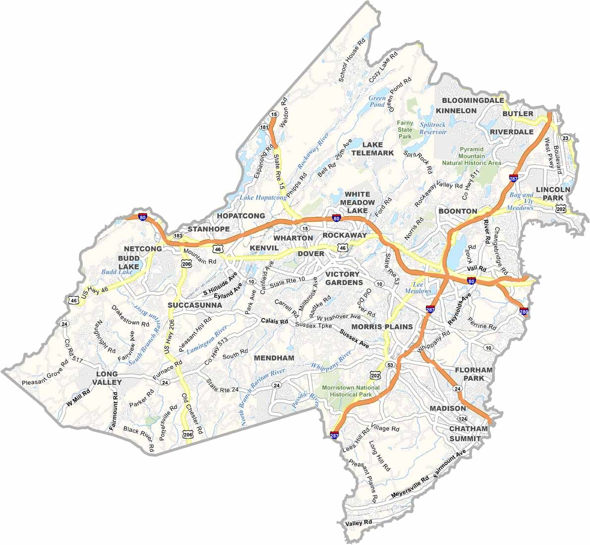

How MCConnect Was Created
As students, we had trouble finding one platform with information about volunteering and event oppurtunities, which made it hard to stay connected to our society. started with a simple problem: students wanted to help, but finding volunteer opportunities was confusing and time-consuming.
We felt motivated to help, but we could not find volunteer oppurtunities with straightforward directions and clear information. We had to search through multiple websites, social media pages to find one event that inrested us and worked with our schedule.
This led to the creation of MCConnect, a hub where community memebers can find and participate in events to feel connected and help their society. Our goal was to simplify We wanted to simplify the idea of volunteering, and giving back.
